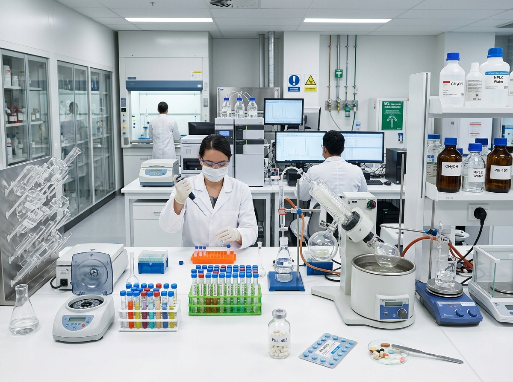
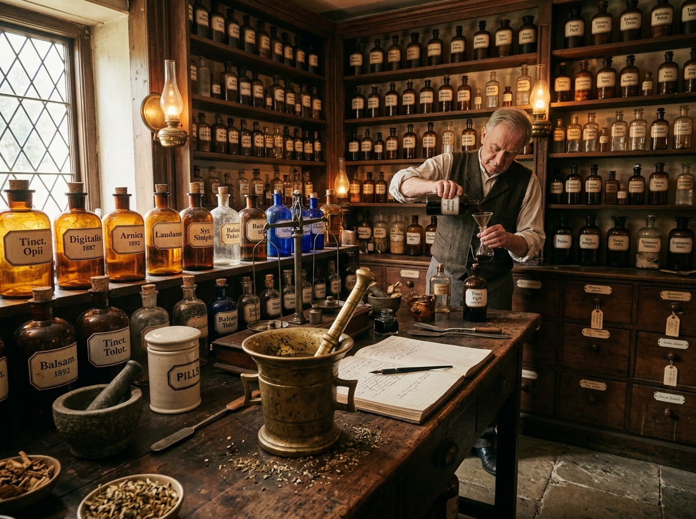
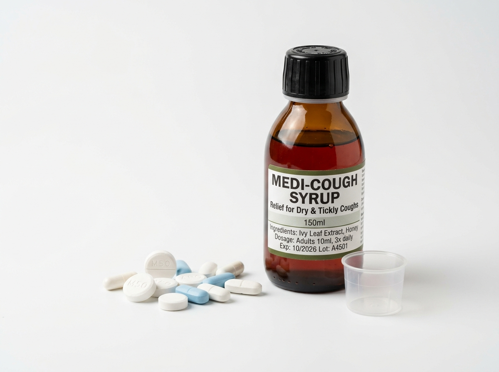
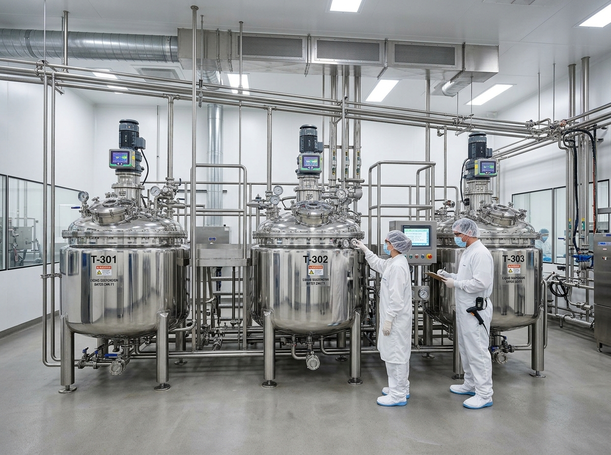
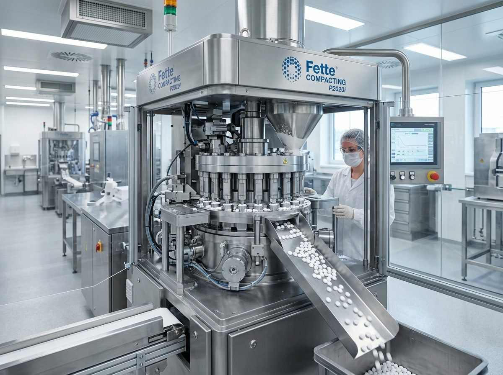

Processos Orgânicos e Inorgânicos.
Universidade Federal de Santa Maria (UFSM) | Engenharia de Produção
Transformar um princípio ativo em medicamento exige controle rigoroso. Compostos orgânicos e inorgânicos trabalham em conjunto:
Fármacos (IFAs) e excipientes como açúcares (sacarose/sorbitol) e conservantes (metilparabeno).
Sais (como os fosfatos) atuam rigorosamente no controle e estabilização do pH (agentes tamponantes).


A evolução das formas farmacêuticas reflete o avanço da tecnologia e da química:
Uso de extratos vegetais, animais e minerais (ex: Papiro de Ebers).
Tradições islâmicas introduzem preparações à base de açúcar e água (primeiros xaropes).
William Brockedon patenteia o dispositivo para compressão mecânica, iniciando a produção de comprimidos em escala industrial.

60% a 70% do Mercado

20% a 30% do Mercado

A escolha do método depende diretamente da fluidez e compressibilidade dos pós:
Mistura simples dos componentes seguida de compactação direta na máquina.
Mistura compactada previamente e fragmentada. Ideal para fórmulas sensíveis a umidade ou calor extremo.
Adição de solução aglutinante. Melhora significativamente o fluxo e compressibilidade dos pós.
Etapas finais incluem o possível revestimento polimérico e o controle rigoroso de qualidade (peso, dureza, friabilidade, dissolução).
Foco principal na homogeneização absoluta e estabilidade química:
Dissolução rigorosamente controlada de açúcar em reator apropriado.
Adição dos componentes solúveis e do princípio ativo (IFA).
Uso de compostos orgânicos (para viscosidade e conservação) e inorgânicos (para estabilizar o pH).
Agitação mecânica vigorosa, filtração (clarificação) e envase.
Com a alta demanda, a Engenharia de Produção tornou-se vital nas operações industriais:
Planejamento estratégico de compras internacionais (IFAs), rigoroso controle de estoques e programação da produção.
Aplicação da filosofia Lean Manufacturing focada primariamente em reduzir desperdícios e o tempo de setup das máquinas.
Uso metódico de Controle Estatístico de Processo (CEP) para identificar variações e garantir total submissão às normas da Anvisa.